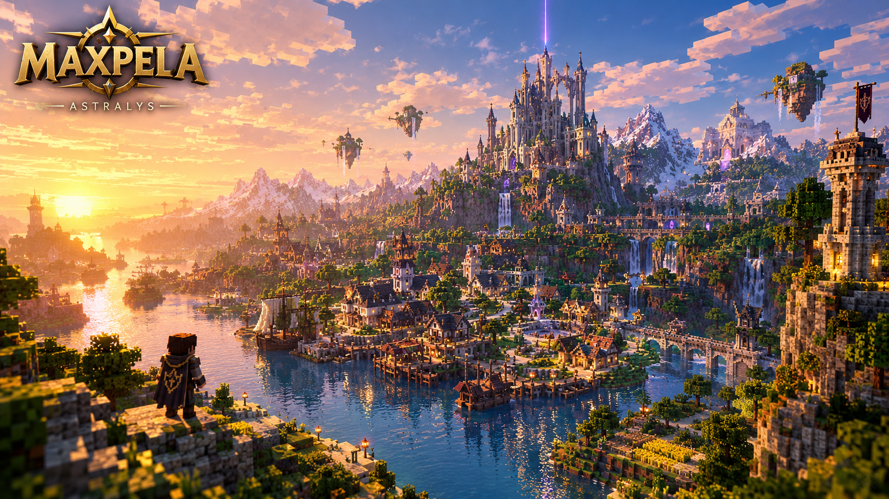

UNE CRÉATION DE MAXPELA STUDIO
MaxPela
MaxPela
Chapitre I
Une aventure Minecraft originale en développement, imaginée et créée par MaxPela Studio.
LE PROJET
Une aventure originale, façonnée par MaxPela Studio.
MaxPela est un projet d’aventure pour Minecraft Java Edition. Le Chapitre I prend place autour d’Astralys et d’une ancienne légende. L’exploration, les donjons, les énigmes, les combats et la narration forment la vision de cette première campagne.
Le projet est en développement. Les éléments présentés comme objectifs décrivent la direction prévue et ne signifient pas qu’ils sont déjà disponibles dans une version publique.

SUIVI DES PUBLICATIONS
Versions et téléchargements
Les versions publiques et leurs fichiers seront listés ici au fur et à mesure de leur publication.
VERSION SUIVIE0.1.0
Premières étapes du développement
Cette version est référencée par le Devblog #001, « Bienvenue dans Astralys ». Retrouvez les fichiers disponibles sur la page officielle Modrinth.
Fichier du mod disponible
TÉLÉCHARGER SUR MODRINTH ↗Télécharge dès maintenant le mod MaxPela depuis sa page officielle sur Modrinth.
Aucun autre numéro de version ni fichier de téléchargement public n’est référencé actuellement. Le pack de mods requis est présenté séparément sur la page des mods.